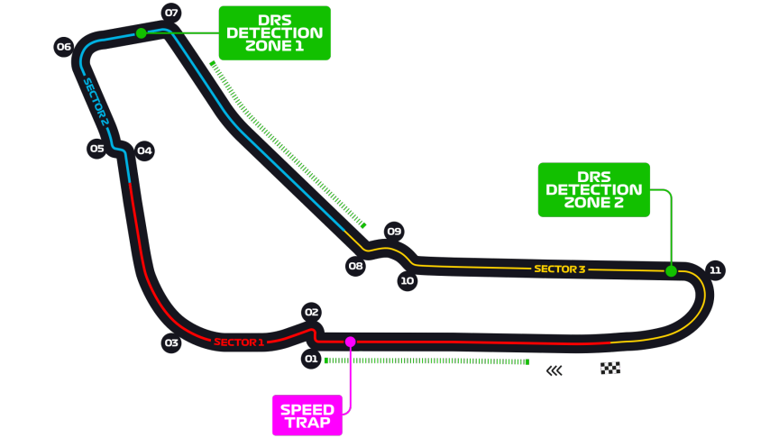

Grand Prix d'Italie
Informations
Nom du circuit
Autodrome National de Monza
Lieu
Monza (Italie)
Nombre de tours
53
Longueur du circuit
5.793 km
Distance de course
306.72 km
Dernier vainqueur
Max Verstappen
Classement nombres de victoires sur ce circuit
5 victoires - Michael Schumacher
5 victoires - Lewis Hamilton
3 victoires - Juan Manuel Fangio
3 victoires - Stirling Moss
3 victoires - Ronnie Peterson
3 victoires - Nelson Piquet
3 victoires - Alain Prost
3 victoires - Rubens Barichello
3 victoires - Sebastian Vettel
Le saviez-vous ?
C'est lors de ce Grand Prix, pour son édition 2020, que le français remporta sa première victoire. C'était aussi le première victoire française depuis plus de 24 ans.
Le Grand Prix d'Italie a toujours eu lieu sur le circuit actuel de Monza, à part en 1980 où le GP a eu lieu sur le circuit d'Imola.
C'est d'ailleurs le seul Grand Prix avec celui de Grande-Bretagne à avoir toujours été au calendrier du championnat du monde de Formule 1 depuis 1950.